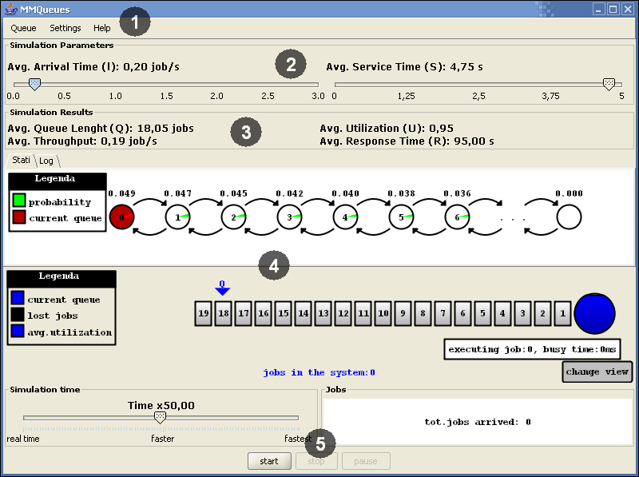

Next: Menu.
Up: Manuale Utente
Previous: Installazione ed esecuzione.
Figure 2:
Schermata principale - sezioni.

|
La schermata principale di MMQueues è divisa in 5 parti (vedi figura 2):
- Menu, descritto nel paragrafo 3.1;
- Parametri della simulazione, descritto nel paragrafo 3.2;
- Risultati della simulazione, descritto nel paragrafo 3.3;
- Pannelli della simulazione, descritto nel paragrafo 3.4;
- Controlli della simulazione, descritto nel paragrafo 3.5.
Subsections
Ernesto
2004-04-15